Reading note: Page images preserve the original visual layout. Expand the extracted text for searching, copying, or machine analysis.
Page 1
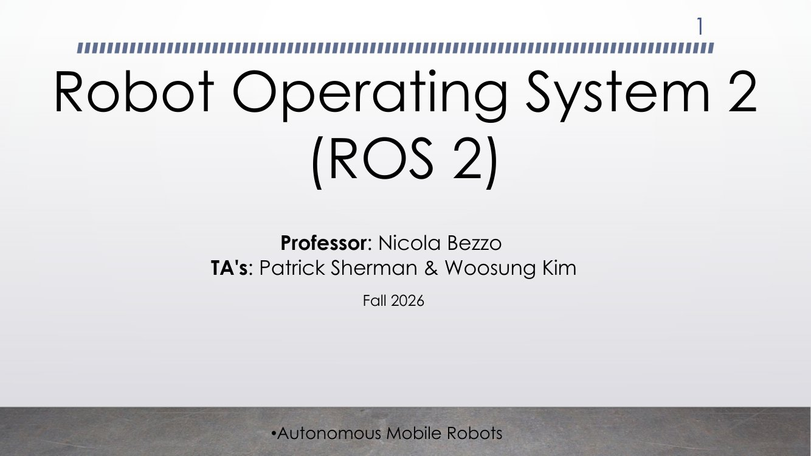
Extracted searchable text
1 Robot Operating System 2 (ROS 2) Professor: Nicola Bezzo TA's: Patrick Sherman & Woosung Kim Fall 2026 •Autonomous Mobile Robots
Page 2
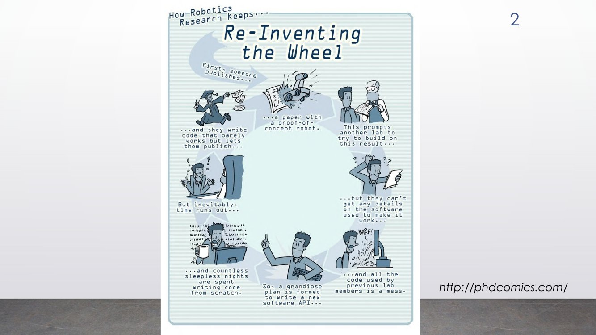
Extracted searchable text
2 http://phdcomics.com/
Page 3
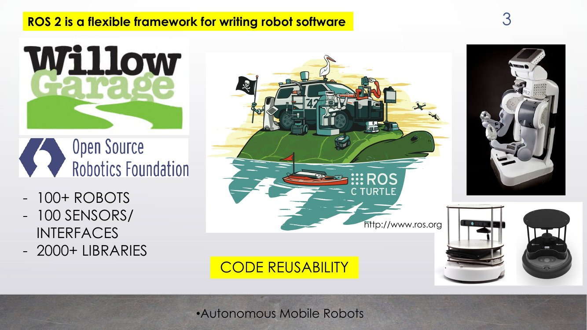
Extracted searchable text
3 ROS 2 is a flexible framework for writing robot software - 100+ ROBOTS - 100 SENSORS/ http://www.ros.org INTERFACES - 2000+ LIBRARIES CODE REUSABILITY •Autonomous Mobile Robots
Page 4
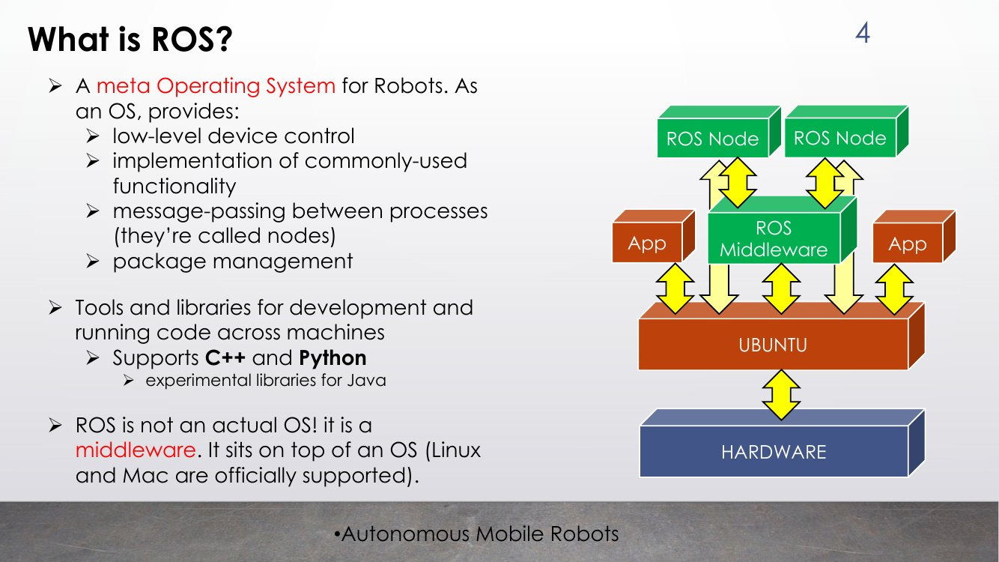
Extracted searchable text
4 What is ROS? Ø A meta Operating System for Robots. As an OS, provides: Ø low-level device control ROS Node ROS Node Ø implementation of commonly-used functionality Ø message-passing between processes ROS (they’re called nodes) App App Middleware Ø package management Ø Tools and libraries for development and running code across machines UBUNTU Ø Supports C++ and Python Ø experimental libraries for Java Ø ROS is not an actual OS! it is a middleware. It sits on top of an OS (Linux HARDWARE and Mac are officially supported). •Autonomous Mobile Robots
Page 5
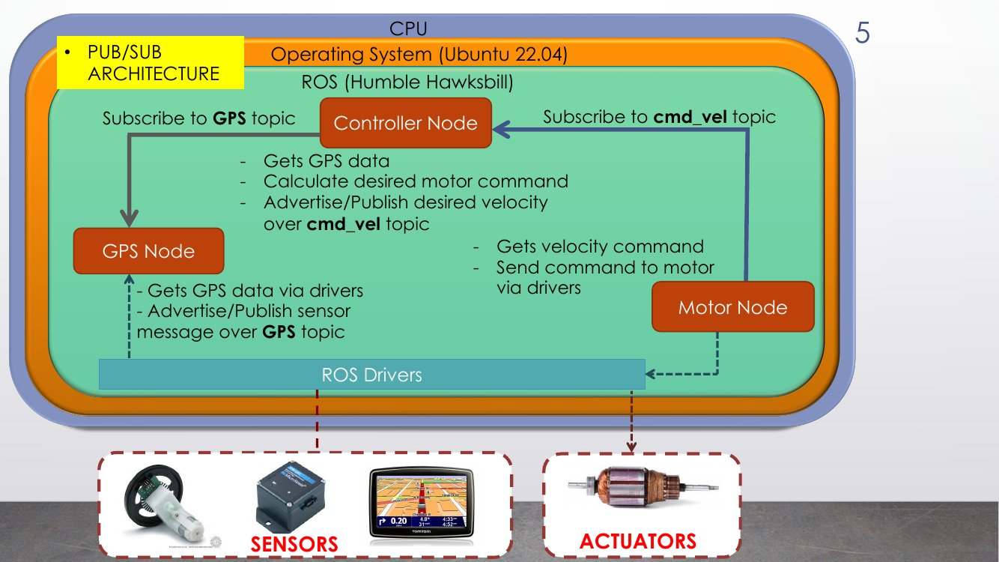
Extracted searchable text
CPU 5 • PUB/SUB Operating System (Ubuntu 22.04) ARCHITECTURE ROS (Humble Hawksbill) Subscribe to GPS topic Subscribe to cmd_vel topic Controller Node - Gets GPS data - Calculate desired motor command - Advertise/Publish desired velocity over cmd_vel topic - Gets velocity command GPS Node - Send command to motor - Gets GPS data via drivers via drivers Motor Node - Advertise/Publish sensor message over GPS topic ROS Drivers SENSORS ACTUATORS
Page 6
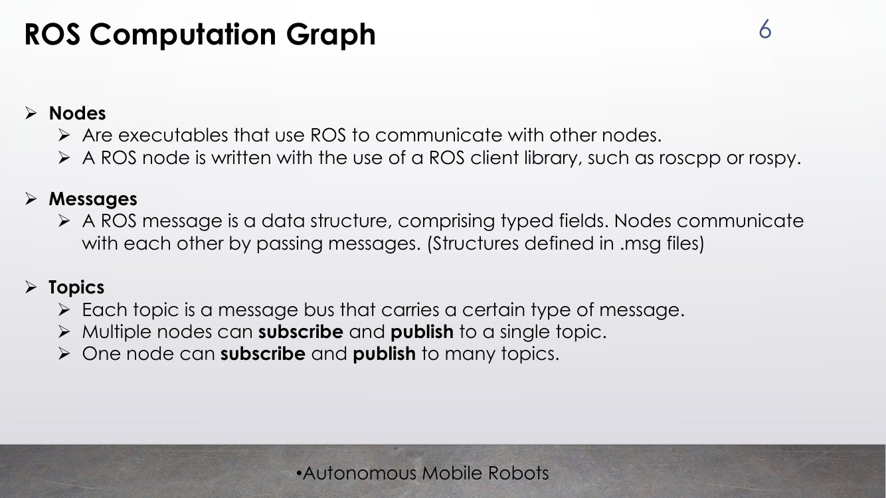
Extracted searchable text
6 ROS Computation Graph Ø Nodes Ø Are executables that use ROS to communicate with other nodes. Ø A ROS node is written with the use of a ROS client library, such as roscpp or rospy. Ø Messages Ø A ROS message is a data structure, comprising typed fields. Nodes communicate with each other by passing messages. (Structures defined in .msg files) Ø Topics Ø Each topic is a message bus that carries a certain type of message. Ø Multiple nodes can subscribe and publish to a single topic. Ø One node can subscribe and publish to many topics. •Autonomous Mobile Robots
Page 7
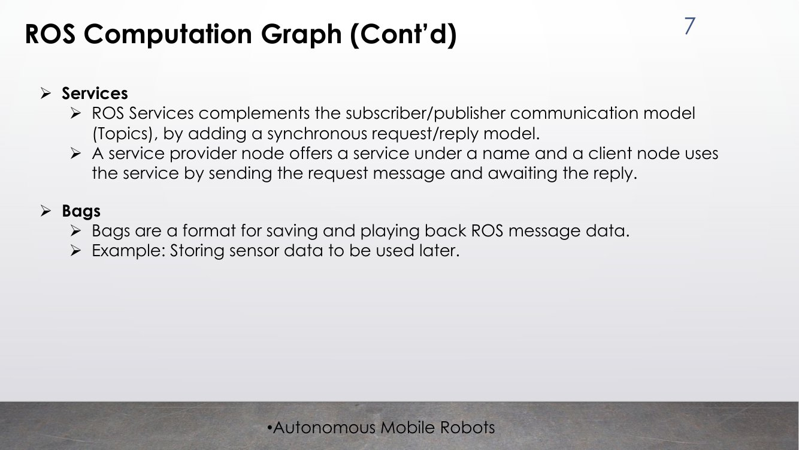
Extracted searchable text
7 ROS Computation Graph (Cont’d) Ø Services Ø ROS Services complements the subscriber/publisher communication model (Topics), by adding a synchronous request/reply model. Ø A service provider node offers a service under a name and a client node uses the service by sending the request message and awaiting the reply. Ø Bags Ø Bags are a format for saving and playing back ROS message data. Ø Example: Storing sensor data to be used later. •Autonomous Mobile Robots
Page 8
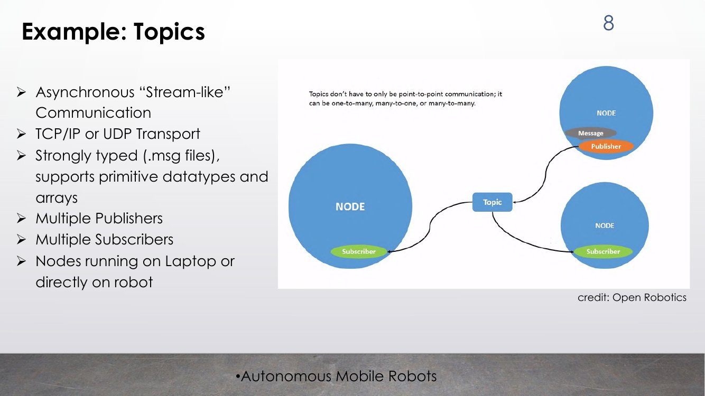
Extracted searchable text
8 Example: Topics Ø Asynchronous “Stream-like” Communication Ø TCP/IP or UDP Transport Ø Strongly typed (.msg files), supports primitive datatypes and arrays Ø Multiple Publishers Ø Multiple Subscribers Ø Nodes running on Laptop or directly on robot credit: Open Robotics •Autonomous Mobile Robots
Page 9
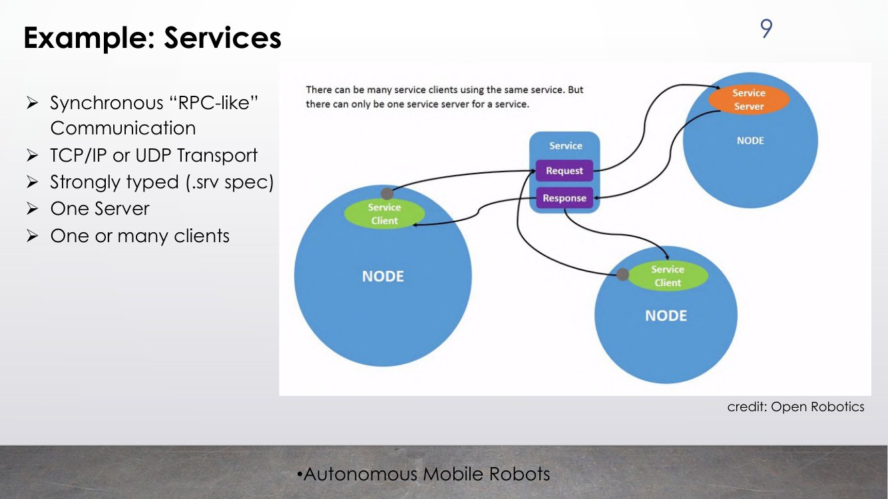
Extracted searchable text
9 Example: Services Ø Synchronous “RPC-like” Communication Ø TCP/IP or UDP Transport Ø Strongly typed (.srv spec) Ø One Server Ø One or many clients credit: Open Robotics •Autonomous Mobile Robots
Page 10
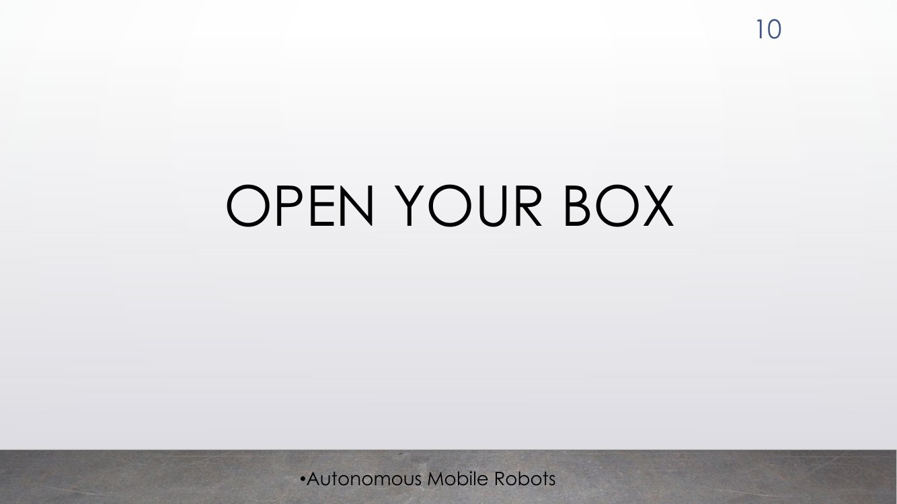
Extracted searchable text
10 OPEN YOUR BOX •Autonomous Mobile Robots
Page 11
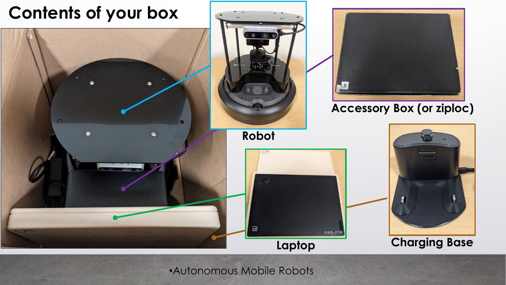
Extracted searchable text
Contents of your box 11 Accessory Box (or ziploc) Robot Charging Base Laptop •Autonomous Mobile Robots
Page 12
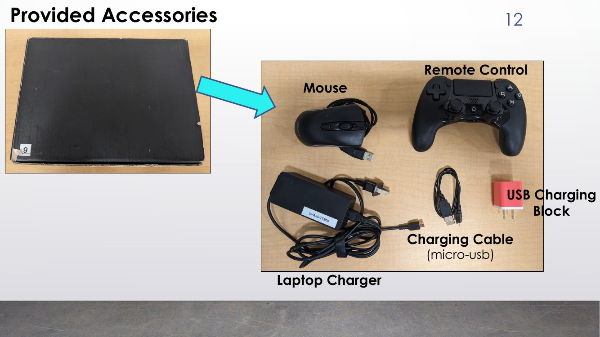
Extracted searchable text
Provided Accessories 12 Remote Control Mouse USB Charging Block Charging Cable (micro-usb) Laptop Charger
Page 13
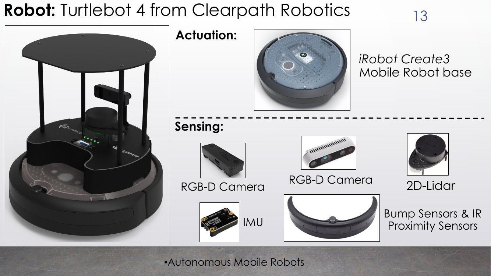
Extracted searchable text
Robot: Turtlebot 4 from Clearpath Robotics 13 Actuation: iRobot Create3 Mobile Robot base Sensing: RGB-D Camera RGB-D Camera 2D-Lidar Bump Sensors & IR IMU Proximity Sensors •Autonomous Mobile Robots
Page 14
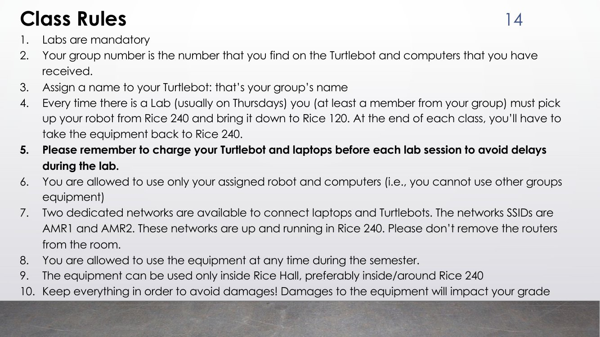
Extracted searchable text
Class Rules 14 1. Labs are mandatory 2. Your group number is the number that you find on the Turtlebot and computers that you have received. 3. Assign a name to your Turtlebot: that’s your group’s name 4. Every time there is a Lab (usually on Thursdays) you (at least a member from your group) must pick up your robot from Rice 240 and bring it down to Rice 120. At the end of each class, you’ll have to take the equipment back to Rice 240. 5. Please remember to charge your Turtlebot and laptops before each lab session to avoid delays during the lab. 6. You are allowed to use only your assigned robot and computers (i.e., you cannot use other groups equipment) 7. Two dedicated networks are available to connect laptops and Turtlebots. The networks SSIDs are AMR1 and AMR2. These networks are up and running in Rice 240. Please don’t remove the routers from the room. 8. You are allowed to use the equipment at any time during the semester. 9. The equipment can be used only inside Rice Hall, preferably inside/around Rice 240 10. Keep everything in order to avoid damages! Damages to the equipment will impact your grade
Page 15
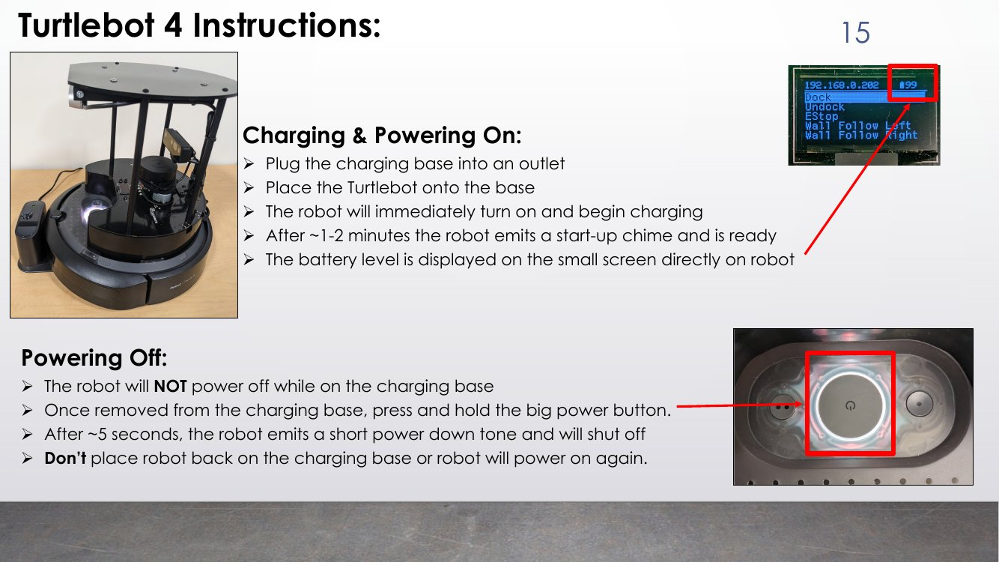
Extracted searchable text
Turtlebot 4 Instructions: 15 Charging & Powering On: Ø Plug the charging base into an outlet Ø Place the Turtlebot onto the base Ø The robot will immediately turn on and begin charging Ø After ~1-2 minutes the robot emits a start-up chime and is ready Ø The battery level is displayed on the small screen directly on robot Powering Off: Ø The robot will NOT power off while on the charging base Ø Once removed from the charging base, press and hold the big power button. Ø After ~5 seconds, the robot emits a short power down tone and will shut off Ø Don’t place robot back on the charging base or robot will power on again.
Page 16
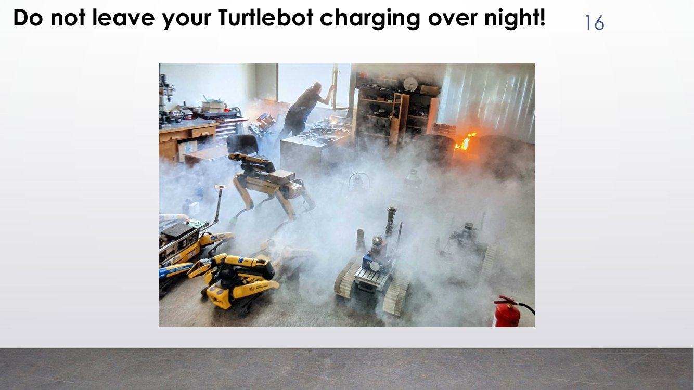
Extracted searchable text
Do not leave your Turtlebot charging over night! 16
Page 17
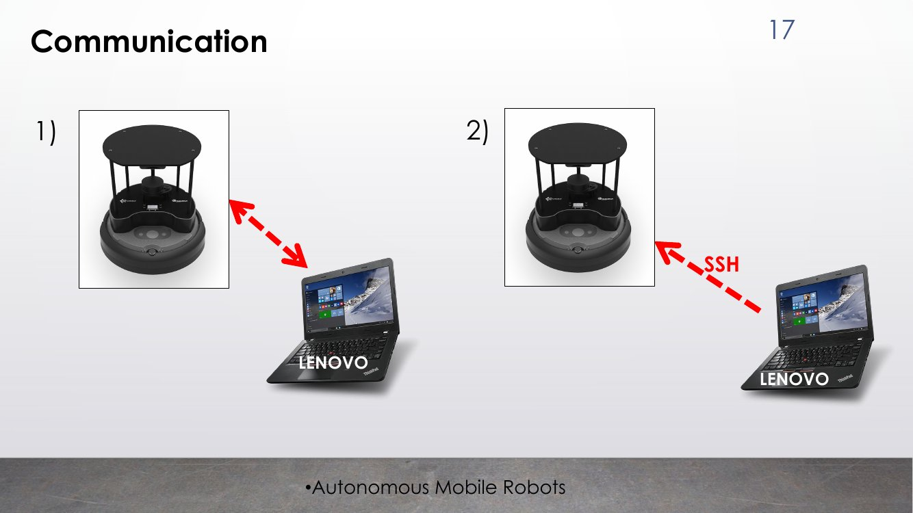
Extracted searchable text
17 Communication 1) 2) SSH LENOVO •Autonomous Mobile Robots
Page 18
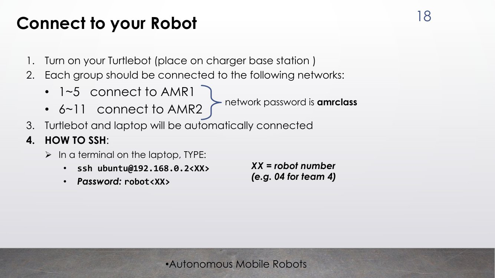
Extracted searchable text
18 Connect to your Robot 1. Turn on your Turtlebot (place on charger base station ) 2. Each group should be connected to the following networks: • 1~5 connect to AMR1 network password is amrclass • 6~11 connect to AMR2 3. Turtlebot and laptop will be automatically connected 4. HOW TO SSH: Ø In a terminal on the laptop, TYPE: XX = robot number • ssh ubuntu@192.168.0.2<XX> (e.g. 04 for team 4) • Password: robot<XX> •Autonomous Mobile Robots
Page 19
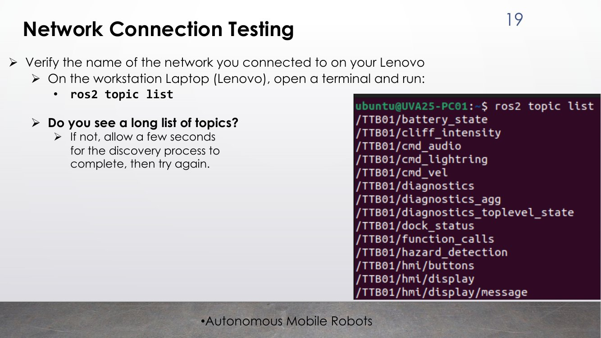
Extracted searchable text
19 Network Connection Testing Ø Verify the name of the network you connected to on your Lenovo Ø On the workstation Laptop (Lenovo), open a terminal and run: • ros2 topic list Ø Do you see a long list of topics? Ø If not, allow a few seconds for the discovery process to complete, then try again. •Autonomous Mobile Robots
Page 20
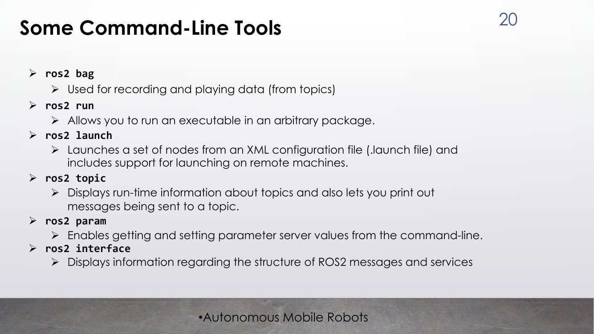
Extracted searchable text
20 Some Command-Line Tools Ø ros2 bag Ø Used for recording and playing data (from topics) Ø ros2 run Ø Allows you to run an executable in an arbitrary package. Ø ros2 launch Ø Launches a set of nodes from an XML configuration file (.launch file) and includes support for launching on remote machines. Ø ros2 topic Ø Displays run-time information about topics and also lets you print out messages being sent to a topic. Ø ros2 param Ø Enables getting and setting parameter server values from the command-line. Ø ros2 interface Ø Displays information regarding the structure of ROS2 messages and services •Autonomous Mobile Robots
Page 21
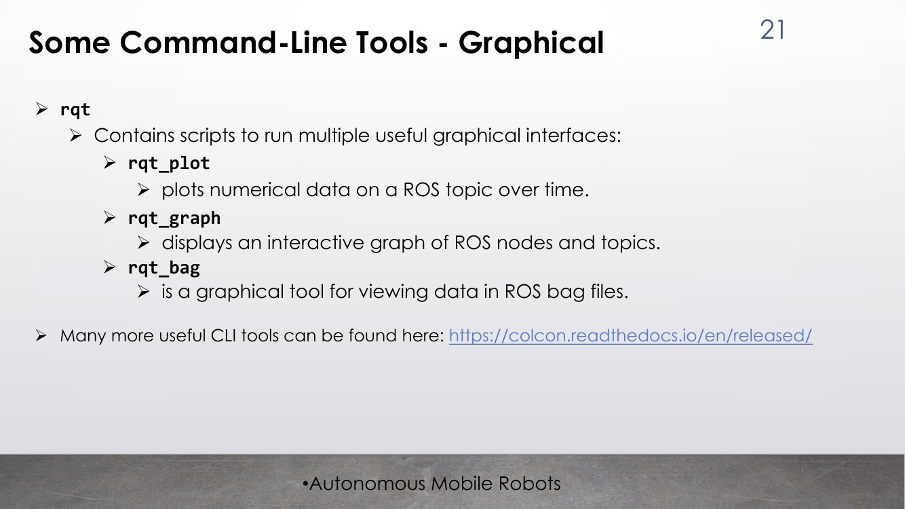
Extracted searchable text
21 Some Command-Line Tools - Graphical Ø rqt Ø Contains scripts to run multiple useful graphical interfaces: Ø rqt_plot Ø plots numerical data on a ROS topic over time. Ø rqt_graph Ø displays an interactive graph of ROS nodes and topics. Ø rqt_bag Ø is a graphical tool for viewing data in ROS bag files. Ø Many more useful CLI tools can be found here: https://colcon.readthedocs.io/en/released/ •Autonomous Mobile Robots
Page 22
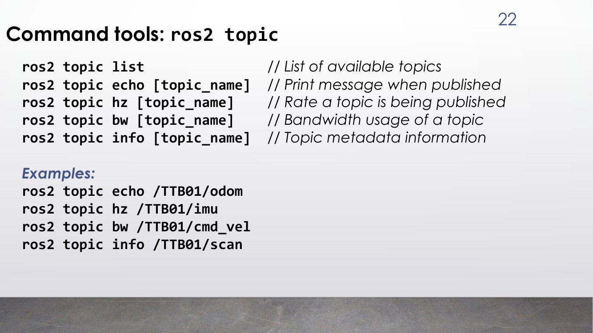
Extracted searchable text
22 Command tools: ros2 topic ros2 topic list // List of available topics ros2 topic echo [topic_name] // Print message when published ros2 topic hz [topic_name] // Rate a topic is being published ros2 topic bw [topic_name] // Bandwidth usage of a topic ros2 topic info [topic_name] // Topic metadata information Examples: ros2 topic echo /TTB01/odom ros2 topic hz /TTB01/imu ros2 topic bw /TTB01/cmd_vel ros2 topic info /TTB01/scan
Page 23
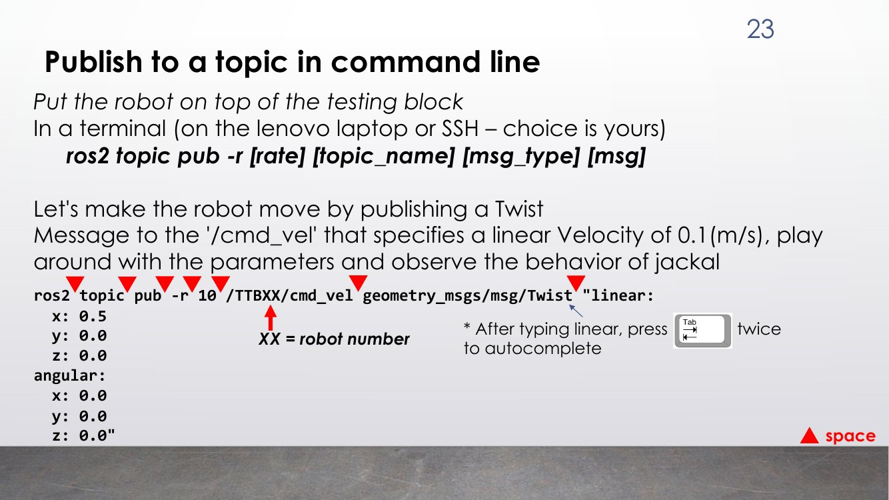
Extracted searchable text
23 Publish to a topic in command line Put the robot on top of the testing block In a terminal (on the lenovo laptop or SSH – choice is yours) ros2 topic pub -r [rate] [topic_name] [msg_type] [msg] Let's make the robot move by publishing a Twist Message to the '/cmd_vel' that specifies a linear Velocity of 0.1(m/s), play around with the parameters and observe the behavior of jackal ros2 topic pub -r 10 /TTBXX/cmd_vel geometry_msgs/msg/Twist "linear: x: 0.5 * After typing linear, press twice y: 0.0 XX = robot number to autocomplete z: 0.0 angular: x: 0.0 y: 0.0 z: 0.0" space
Page 24
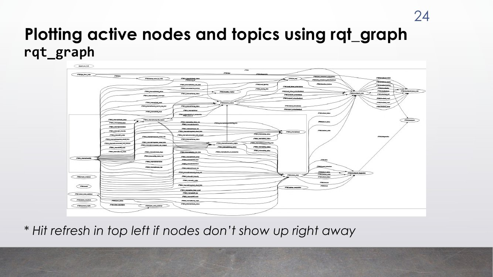
Extracted searchable text
24 Plotting active nodes and topics using rqt_graph rqt_graph * Hit refresh in top left if nodes don’t show up right away
Page 25
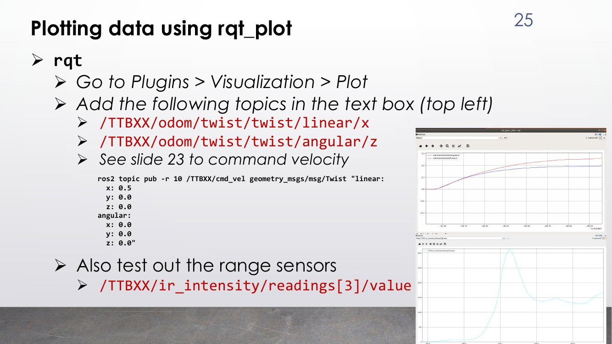
Extracted searchable text
25 Plotting data using rqt_plot Ø rqt Ø Go to Plugins > Visualization > Plot Ø Add the following topics in the text box (top left) Ø /TTBXX/odom/twist/twist/linear/x Ø /TTBXX/odom/twist/twist/angular/z Ø See slide 23 to command velocity ros2 topic pub -r 10 /TTBXX/cmd_vel geometry_msgs/msg/Twist "linear: x: 0.5 y: 0.0 z: 0.0 angular: x: 0.0 y: 0.0 z: 0.0" Ø Also test out the range sensors Ø /TTBXX/ir_intensity/readings[3]/value
Page 26
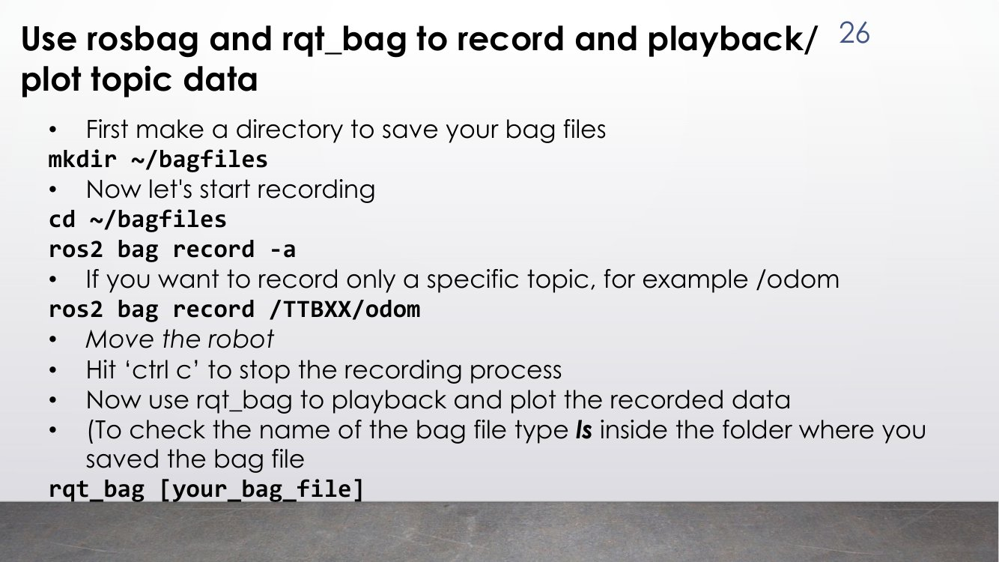
Extracted searchable text
26 Use rosbag and rqt_bag to record and playback/ plot topic data • First make a directory to save your bag files mkdir ~/bagfiles • Now let's start recording cd ~/bagfiles ros2 bag record -a • If you want to record only a specific topic, for example /odom ros2 bag record /TTBXX/odom • Move the robot • Hit ‘ctrl c’ to stop the recording process • Now use rqt_bag to playback and plot the recorded data • (To check the name of the bag file type ls inside the folder where you saved the bag file rqt_bag [your_bag_file]
Page 27
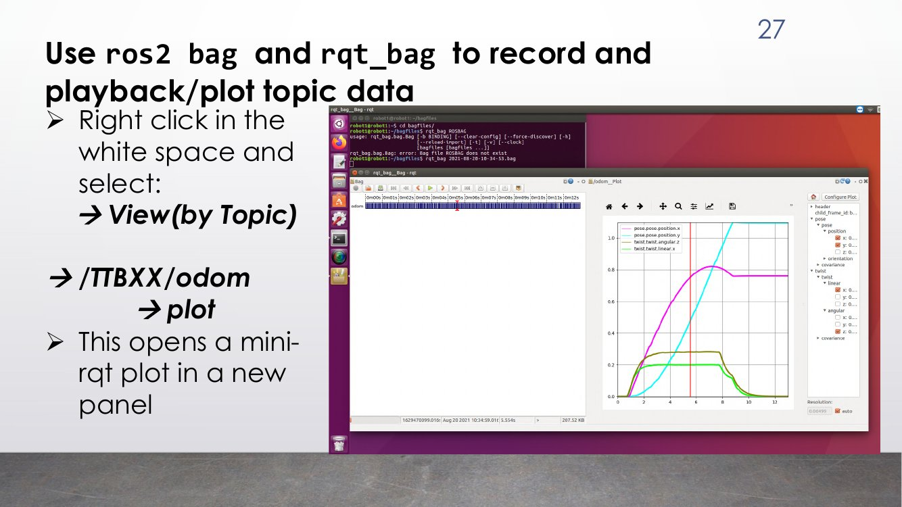
Extracted searchable text
27 Use ros2 bag and rqt_bag to record and playback/plot topic data Ø Right click in the white space and select: à View(by Topic) à/TTBXX/odom à plot Ø This opens a mini- rqt plot in a new panel
Page 28
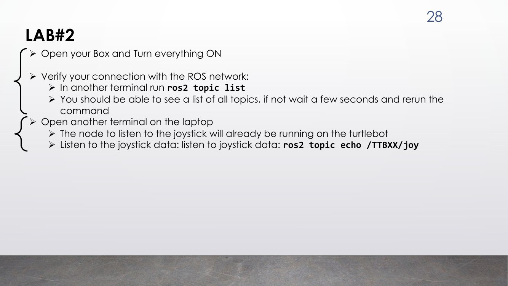
Extracted searchable text
28 LAB#2 Ø Open your Box and Turn everything ON Ø Verify your connection with the ROS network: Ø In another terminal run ros2 topic list Ø You should be able to see a list of all topics, if not wait a few seconds and rerun the command Ø Open another terminal on the laptop Ø The node to listen to the joystick will already be running on the turtlebot Ø Listen to the joystick data: listen to joystick data: ros2 topic echo /TTBXX/joy
Page 29
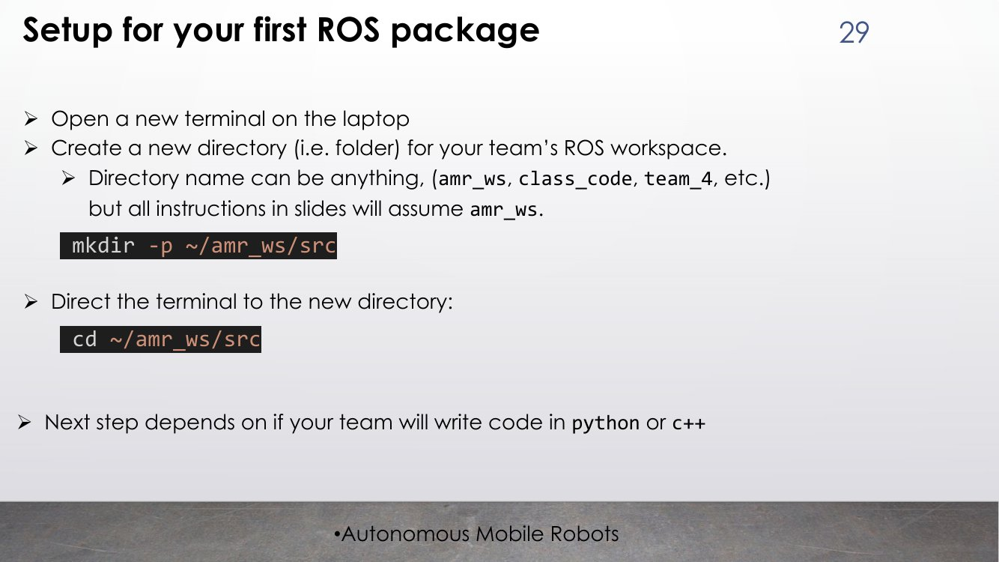
Extracted searchable text
Setup for your first ROS package 29 Ø Open a new terminal on the laptop Ø Create a new directory (i.e. folder) for your team’s ROS workspace. Ø Directory name can be anything, (amr_ws, class_code, team_4, etc.) but all instructions in slides will assume amr_ws. mkdir -p ~/amr_ws/src Ø Direct the terminal to the new directory: cd ~/amr_ws/src Ø Next step depends on if your team will write code in python or c++ •Autonomous Mobile Robots
Page 30
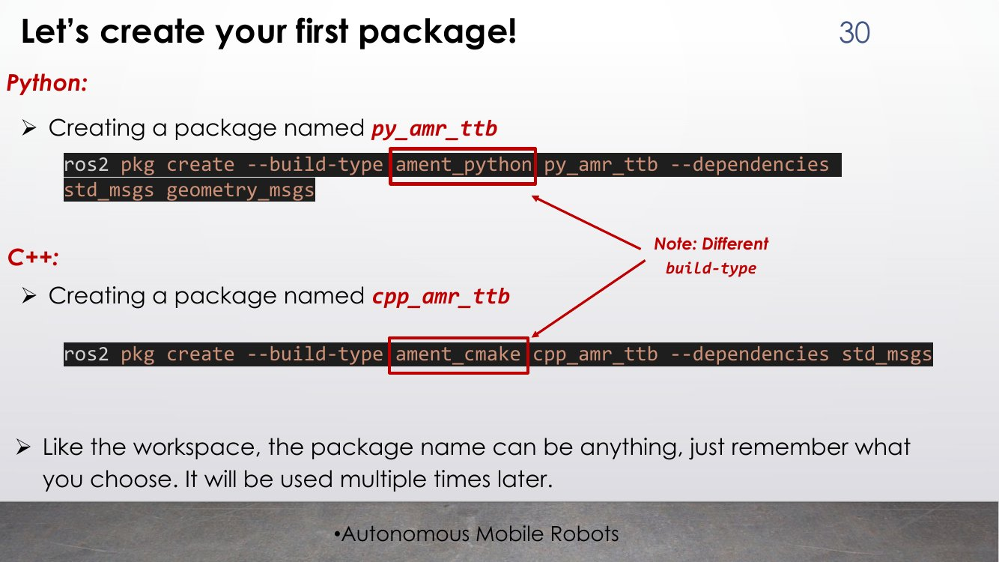
Extracted searchable text
Let’s create your first package! 30 Python: Ø Creating a package named py_amr_ttb ros2 pkg create --build-type ament_python py_amr_ttb --dependencies std_msgs geometry_msgs Note: Different C++: build-type Ø Creating a package named cpp_amr_ttb ros2 pkg create --build-type ament_cmake cpp_amr_ttb --dependencies std_msgs Ø Like the workspace, the package name can be anything, just remember what you choose. It will be used multiple times later. •Autonomous Mobile Robots
Page 31
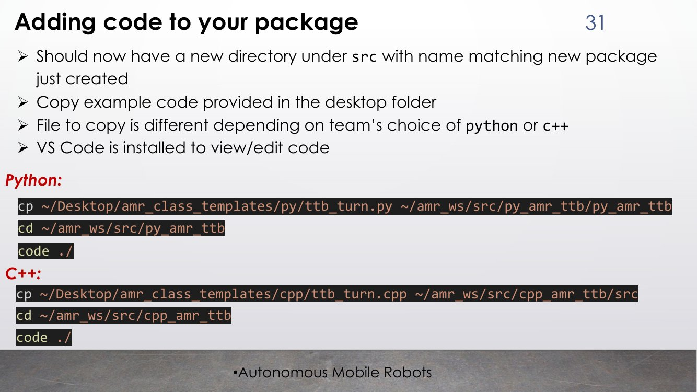
Extracted searchable text
Adding code to your package 31 Ø Should now have a new directory under src with name matching new package just created Ø Copy example code provided in the desktop folder Ø File to copy is different depending on team’s choice of python or c++ Ø VS Code is installed to view/edit code Python: cp ~/Desktop/amr_class_templates/py/ttb_turn.py ~/amr_ws/src/py_amr_ttb/py_amr_ttb cd ~/amr_ws/src/py_amr_ttb code ./ C++: cp ~/Desktop/amr_class_templates/cpp/ttb_turn.cpp ~/amr_ws/src/cpp_amr_ttb/src cd ~/amr_ws/src/cpp_amr_ttb code ./ •Autonomous Mobile Robots
Page 32
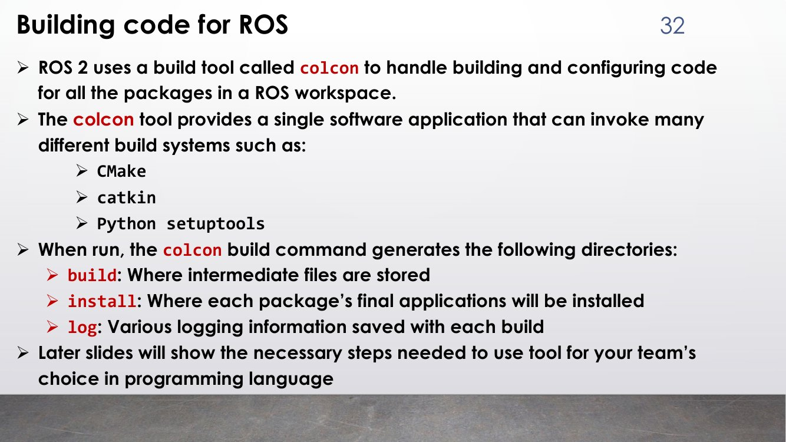
Extracted searchable text
Building code for ROS 32 Ø ROS 2 uses a build tool called colcon to handle building and configuring code for all the packages in a ROS workspace. Ø The colcon tool provides a single software application that can invoke many different build systems such as: Ø CMake Ø catkin Ø Python setuptools Ø When run, the colcon build command generates the following directories: Ø build: Where intermediate files are stored Ø install: Where each package’s final applications will be installed Ø log: Various logging information saved with each build Ø Later slides will show the necessary steps needed to use tool for your team’s choice in programming language
Page 33
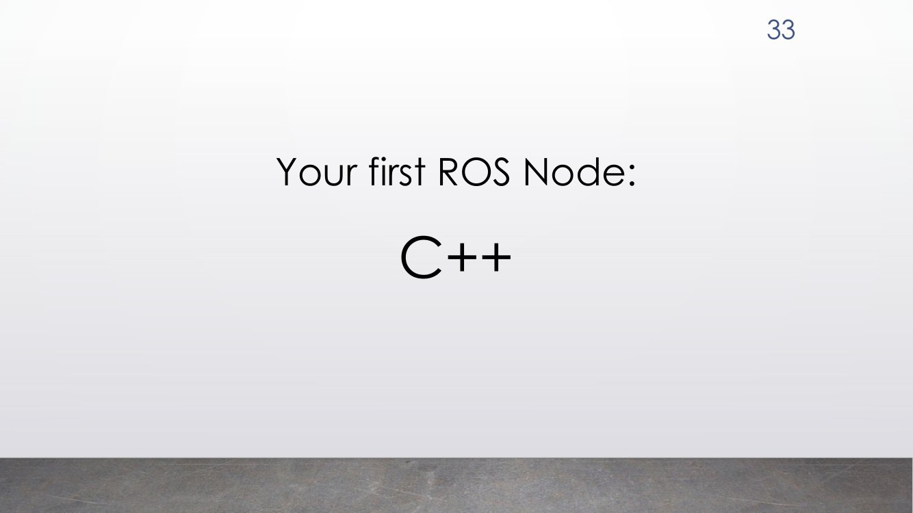
Extracted searchable text
33 Your first ROS Node: C++
Page 34
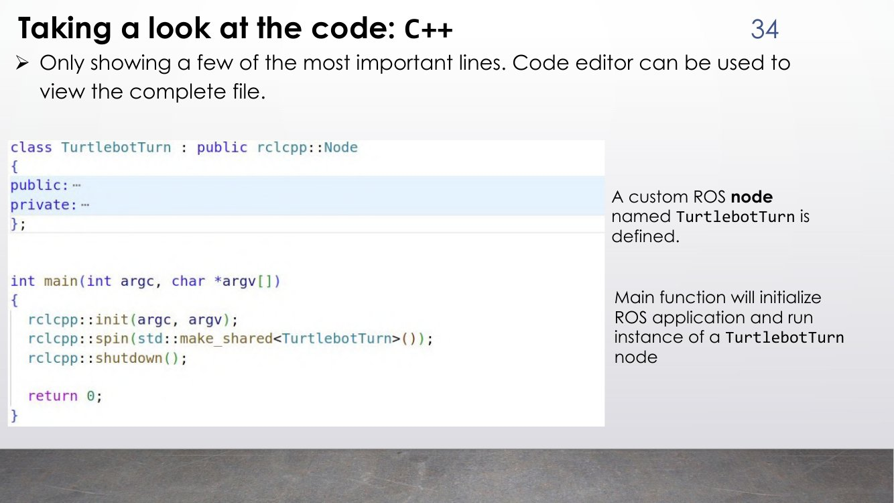
Extracted searchable text
Taking a look at the code: C++ 34 Ø Only showing a few of the most important lines. Code editor can be used to view the complete file. A custom ROS node named TurtlebotTurn is defined. Main function will initialize ROS application and run instance of a TurtlebotTurn node
Page 35
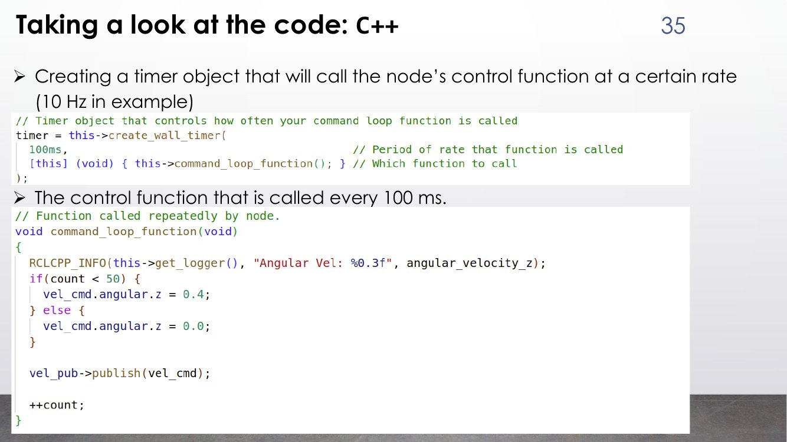
Extracted searchable text
Taking a look at the code: C++ 35 Ø Creating a timer object that will call the node’s control function at a certain rate (10 Hz in example) Ø The control function that is called every 100 ms.
Page 36
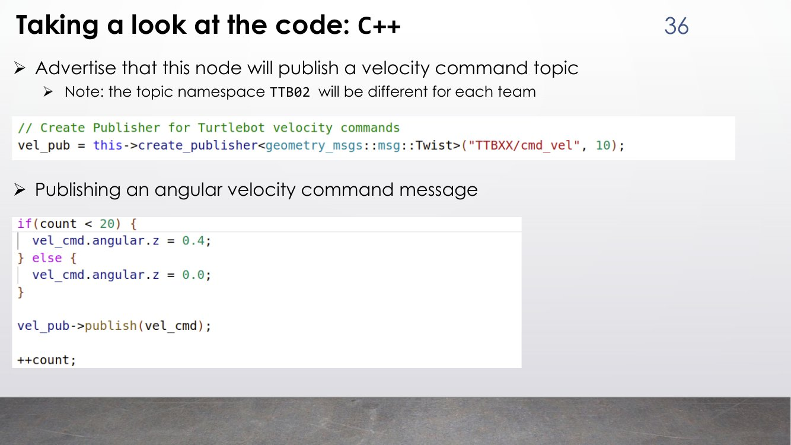
Extracted searchable text
Taking a look at the code: C++ 36 Ø Advertise that this node will publish a velocity command topic Ø Note: the topic namespace TTB02 will be different for each team Ø Publishing an angular velocity command message
Page 37
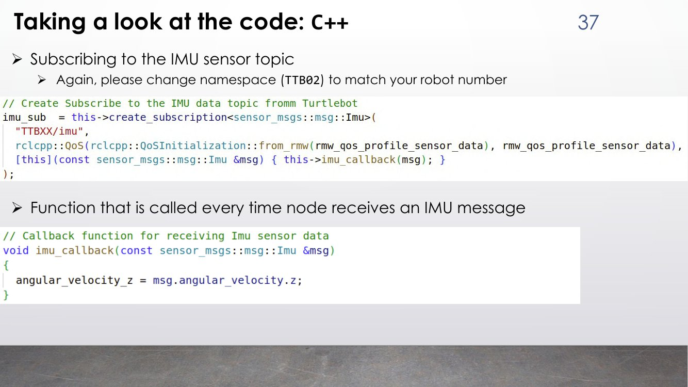
Extracted searchable text
Taking a look at the code: C++ 37 Ø Subscribing to the IMU sensor topic Ø Again, please change namespace (TTB02) to match your robot number Ø Function that is called every time node receives an IMU message
Page 38
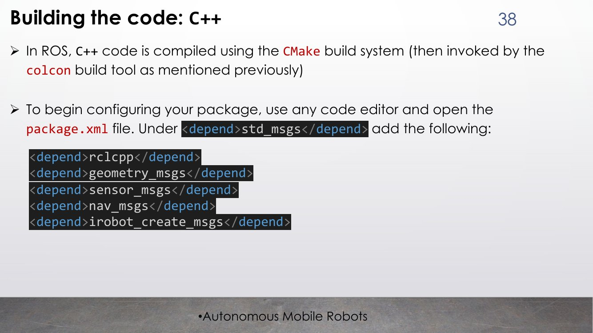
Extracted searchable text
Building the code: C++ 38 Ø In ROS, C++ code is compiled using the CMake build system (then invoked by the colcon build tool as mentioned previously) Ø To begin configuring your package, use any code editor and open the package.xml file. Under <depend>std_msgs</depend> add the following: <depend>rclcpp</depend> <depend>geometry_msgs</depend> <depend>sensor_msgs</depend> <depend>nav_msgs</depend> <depend>irobot_create_msgs</depend> •Autonomous Mobile Robots
Page 39
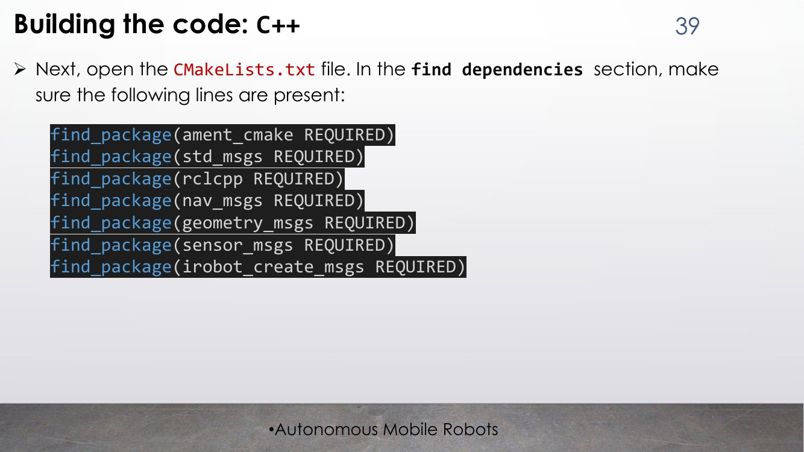
Extracted searchable text
Building the code: C++ 39 Ø Next, open the CMakeLists.txt file. In the find dependencies section, make sure the following lines are present: find_package(ament_cmake REQUIRED) find_package(std_msgs REQUIRED) find_package(rclcpp REQUIRED) find_package(nav_msgs REQUIRED) find_package(geometry_msgs REQUIRED) find_package(sensor_msgs REQUIRED) find_package(irobot_create_msgs REQUIRED) •Autonomous Mobile Robots
Page 40
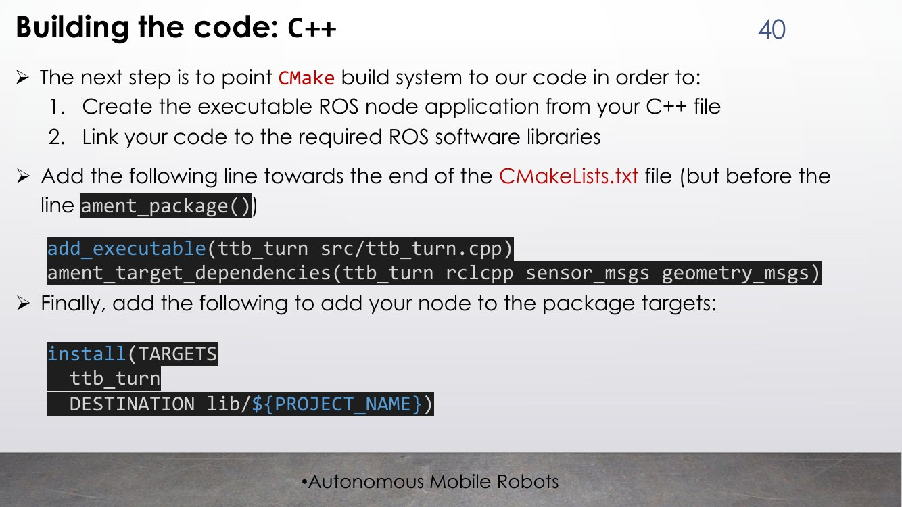
Extracted searchable text
Building the code: C++
40
Ø The next step is to point CMake build system to our code in order to:
1. Create the executable ROS node application from your C++ file
2. Link your code to the required ROS software libraries
Ø Add the following line towards the end of the CMakeLists.txt file (but before the
line ament_package())
add_executable(ttb_turn src/ttb_turn.cpp)
ament_target_dependencies(ttb_turn rclcpp sensor_msgs geometry_msgs)
Ø Finally, add the following to add your node to the package targets:
install(TARGETS
ttb_turn
DESTINATION lib/${PROJECT_NAME})
•Autonomous Mobile RobotsPage 41
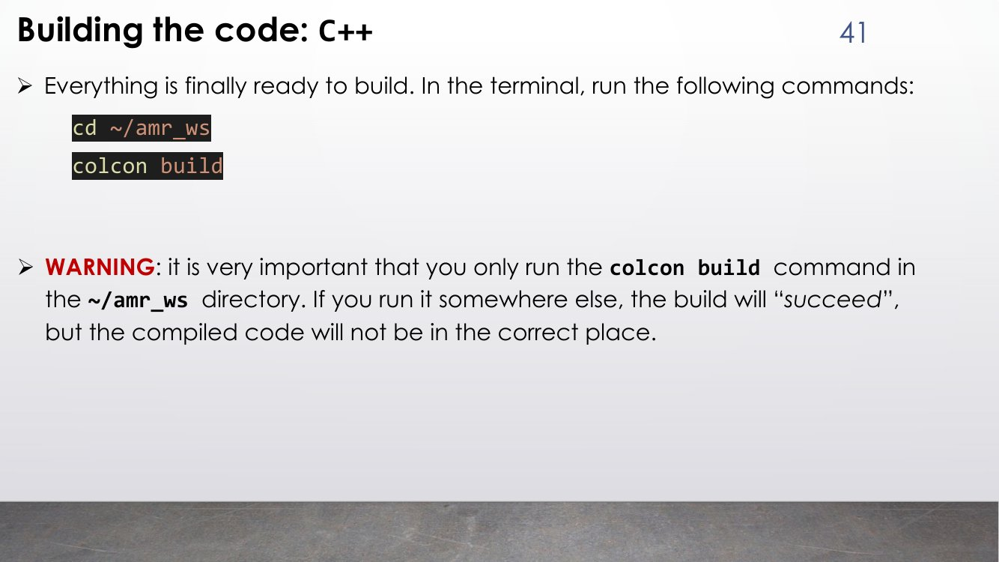
Extracted searchable text
Building the code: C++ 41 Ø Everything is finally ready to build. In the terminal, run the following commands: cd ~/amr_ws colcon build Ø WARNING: it is very important that you only run the colcon build command in the ~/amr_ws directory. If you run it somewhere else, the build will “succeed”, but the compiled code will not be in the correct place.
Page 42
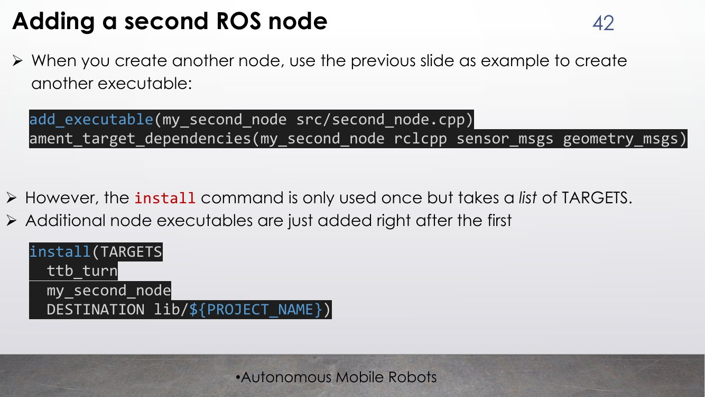
Extracted searchable text
Adding a second ROS node
42
Ø When you create another node, use the previous slide as example to create
another executable:
add_executable(my_second_node src/second_node.cpp)
ament_target_dependencies(my_second_node rclcpp sensor_msgs geometry_msgs)
Ø However, the install command is only used once but takes a list of TARGETS.
Ø Additional node executables are just added right after the first
install(TARGETS
ttb_turn
my_second_node
DESTINATION lib/${PROJECT_NAME})
•Autonomous Mobile RobotsPage 43
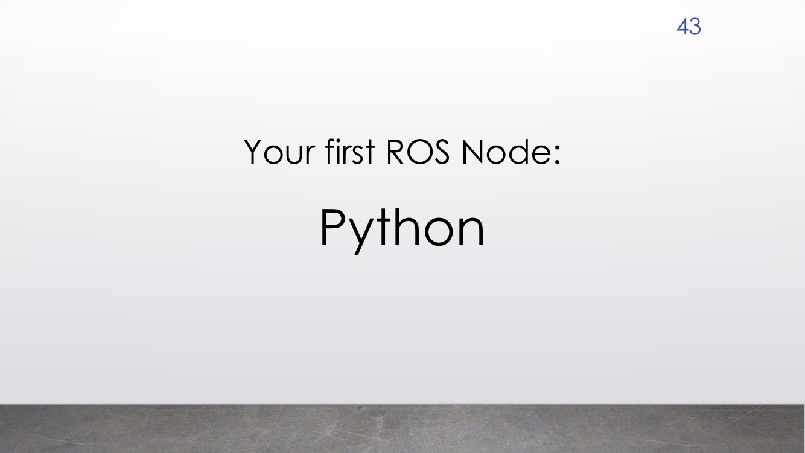
Extracted searchable text
43 Your first ROS Node: Python
Page 44
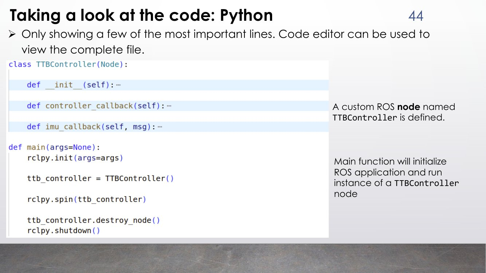
Extracted searchable text
Taking a look at the code: Python 44 Ø Only showing a few of the most important lines. Code editor can be used to view the complete file. A custom ROS node named TTBController is defined. Main function will initialize ROS application and run instance of a TTBController node
Page 45
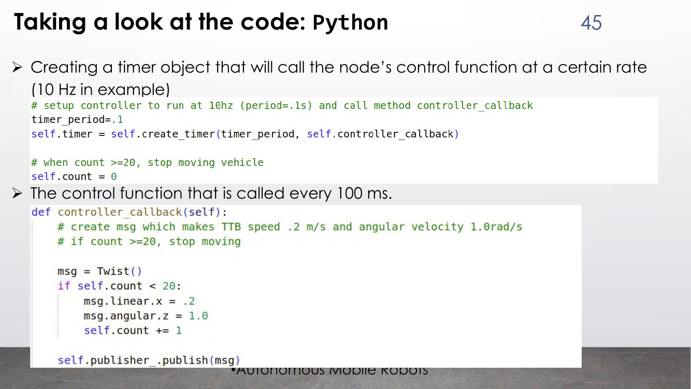
Extracted searchable text
Taking a look at the code: Python 45 Ø Creating a timer object that will call the node’s control function at a certain rate (10 Hz in example) Ø The control function that is called every 100 ms. •Autonomous Mobile Robots
Page 46
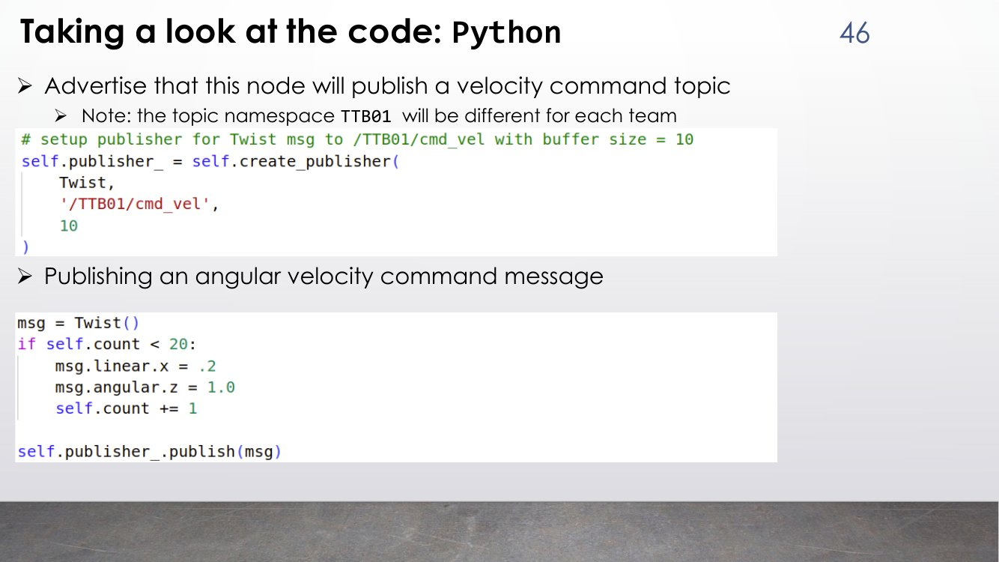
Extracted searchable text
Taking a look at the code: Python 46 Ø Advertise that this node will publish a velocity command topic Ø Note: the topic namespace TTB01 will be different for each team Ø Publishing an angular velocity command message
Page 47
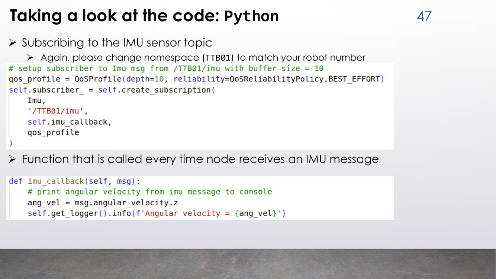
Extracted searchable text
Taking a look at the code: Python 47 Ø Subscribing to the IMU sensor topic Ø Again, please change namespace (TTB01) to match your robot number Ø Function that is called every time node receives an IMU message
Page 48
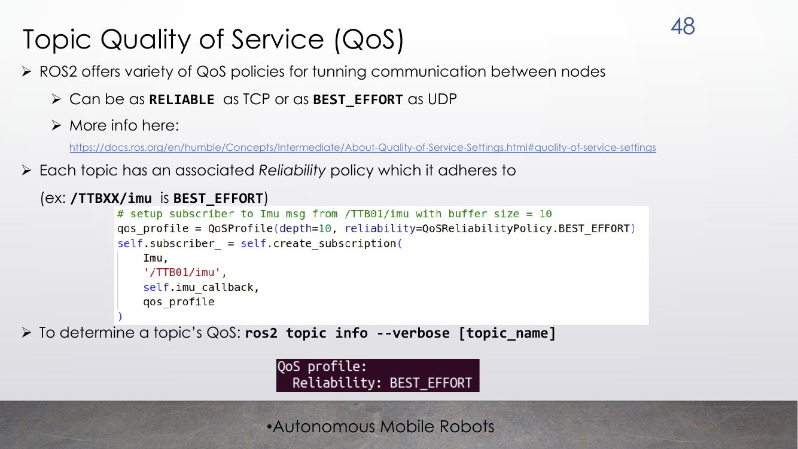
Extracted searchable text
48 Topic Quality of Service (QoS) Ø ROS2 offers variety of QoS policies for tunning communication between nodes Ø Can be as RELIABLE as TCP or as BEST_EFFORT as UDP Ø More info here: https://docs.ros.org/en/humble/Concepts/Intermediate/About-Quality-of-Service-Settings.html#quality-of-service-settings Ø Each topic has an associated Reliability policy which it adheres to (ex: /TTBXX/imu is BEST_EFFORT) Ø To determine a topic’s QoS: ros2 topic info --verbose [topic_name] •Autonomous Mobile Robots
Page 49
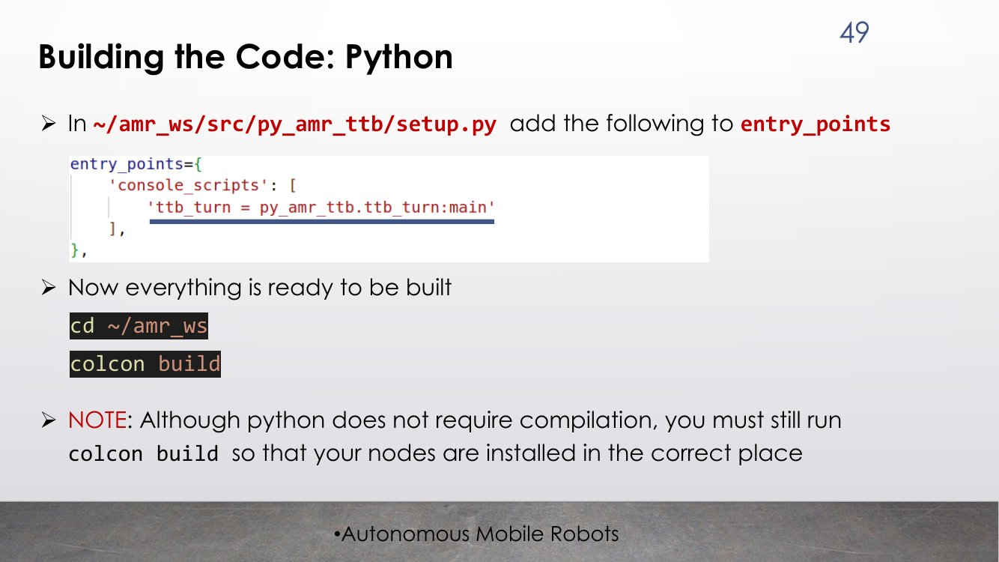
Extracted searchable text
49 Building the Code: Python Ø In ~/amr_ws/src/py_amr_ttb/setup.py add the following to entry_points Ø Now everything is ready to be built cd ~/amr_ws colcon build Ø NOTE: Although python does not require compilation, you must still run colcon build so that your nodes are installed in the correct place •Autonomous Mobile Robots
Page 50
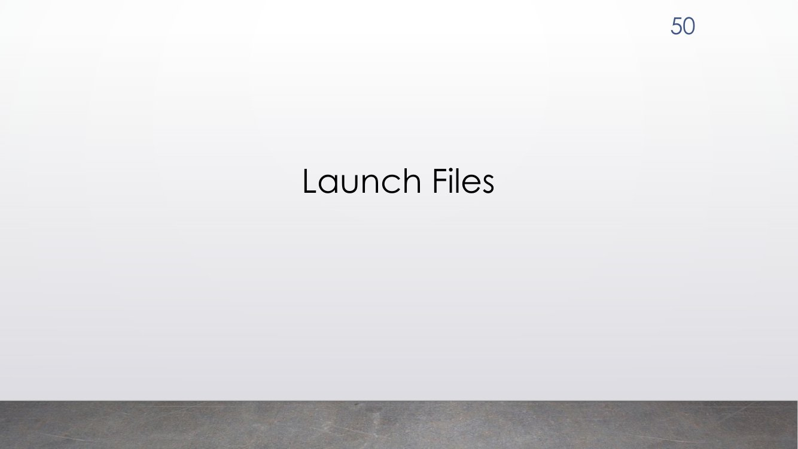
Extracted searchable text
50 Launch Files
Page 51
Extracted searchable text
Launch Files 51 Ø Launch files allows us to run multiple ROS nodes simultaneously Ø The ROS launch tool is built using Python (even if your node is C++) Ø Create a launch directory and copy over example launch file Python: cd ~/amr_ws/src/py_amr_ttb && mkdir launch cp ~/Desktop/amr_class_templates/launch/py_ttb_turn.launch.py launch/ C++: cd ~/amr_ws/src/cpp_amr_ttb && mkdir launch cp ~/Desktop/amr_class_templates/launch/cpp_ttb_turn.launch.py launch/ •Autonomous Mobile Robots
Page 52
Extracted searchable text
52
Launch Files: C++ Setup
Ø Before using launch file, configure the ROS package by doing the following:
Ø In the package.xml file add the following:
<exec_depend>ros2launch</exec_depend>
Ø In the CMakeLists.txt file add the following:
install(DIRECTORY
launch
DESTINATION share/${PROJECT_NAME})
•Autonomous Mobile RobotsPage 53
Extracted searchable text
53 Launch Files: Python Setup Ø Add the following to data_files in setup.py Ø FOR BOTH PYTHON AND C++: Ø Build the package! cd ~/amr_ws colcon build •Autonomous Mobile Robots
Page 54
Extracted searchable text
54 Launch File Contents Variable Description package Name of you ROS package namespace Additional namespace to include (OK to keep empty) executable Name of your executable. Filename for python, defined in CMakeLists.txt for C++ name A unique label for your node when running. •Autonomous Mobile Robots
Page 55
Extracted searchable text
55 Connecting ROS to your build Ø Once everything is ready and running colcon build was successful. Ø Change to the workspace directory and source the setup file, by running the following commands: cd ~/amr_ws source install/setup.bash Ø For convenience, you can run the following command so that you don’t need to repeat the command every time you build or open a new terminal echo “source ~/amr_ws/install/setup.bash” >> ~/.bashrc •Autonomous Mobile Robots
Page 56
Extracted searchable text
56 Run your first node! Ø Now you should be able to run your first node! Python ros2 run py_amr_ttb ttb_turn OR ros2 launch py_amr_ttb py_ttb_turn.launch.py C++ ros2 run cpp_amr_ttb ttb_turn OR ros2 launch cpp_amr_ttb ttb_turn cpp_ttb_turn.launch.py •Autonomous Mobile Robots
Page 57
Extracted searchable text
57 Lab Assignment #1 – due 9/24/26 in lab 1. Joystick teleoperation: program and configure the joystick to operate the robot 2. Autonomous wandering with range sensor: use the IR range sensors to create an autonomous navigation behavior in which the robot drives with constant input speed v=0.3m/s. As soon as an obstacle is detected (range < 0.1m), the robot needs to stop and turn toward a random different direction and keep going until it detects another obstacle and the same process repeats. Save a bag file with all the data and visualize the plots of the IR range sensor. 3. Cruise control, variable speed: Use odom data and implement a PID on the speed with kp=0.1, ki=0.001, kd=0.03. Maintain 03m/s Check next slide for info on the PID for this exercise. Use rqt plot to visualize the speed of the vehicle as you run this behavior 4. State machine: Create a node that toggle the 3 behaviors in 1,2, and 3 from the joystick. Specifically: • by pressing L1 key on the joystick the robot will be in autonomous wandering (2). • by pressing L2 key the robot will enter cruise control mode (3). In this mode ,assign cruise control speeds to the following buttons on the joystick: square = 0.1m/s; triangle = 0.2m/s; circle = 0.4m/s; x = stop (0m/s) • While R1 is kept pressed, the robot switches to teleop mode (1) and once it is released the robot continue on its previous behavior (cruise or wondering) 5. extra: build a map using the IR sensor data and odom data. Collect data and plot the map.
Page 58
Extracted searchable text
58 PID - Pseudo Code previous_error = 0 integral = 0 start: error = setpoint - measured_value integral = integral + error*dt derivative = (error - previous_error)/dt output = output + Kp*error + Ki*integral + Kd*derivative previous_error = error wait(dt) goto start
Page 59
Extracted searchable text
59 Useful tools and headers • Each sensor has its own data type; to access data, you need the right header • Refer to the following headers to put in your nodes: Sensor C++ Python IR Range Sensor #include from irobot_create_msgs.msg import <irobot_create_msgs/msg/irintensityvect IrIntensityVector or.h> Joystick #include <sensor_msgs/msg/joy.h> from sensor_msgs.msg import Joy Camera #include <sensor_msgs/msg/image.h> from sensor_msgs.msg import Image Lidar #include <sensor_msgs/msg/scan.h> from sensor_msgs.msg import LaserScan Useful Python Libraries: Useful C++ Headers: Useful ROS/TTB resources • Import numpy • Include <math.h> • https://docs.ros.org/en/humble/index.html • Import math • Include <stdio.h> • https://turtlebot.github.io/turtlebot4-user-manual/ • Import random • Include <stdlib.h> • https://github.com/iRobotEducation/irobot_create_msgs • Include <time.h> /tree/rolling/msg •Autonomous Mobile Robots